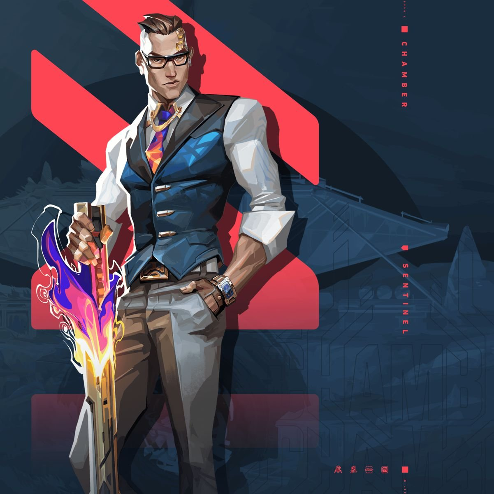

- Home
- Artist
- Movie
- Games
- About us
VALORANT

Valorant is a free-to-play first-person hero shooter developed and published by Riot Games, for Microsoft Windows. First teased under the codename Project A in October 2019, the game began a closed beta period with limited access on April 7, 2020, followed by an official release on June 2, 2020. The development of the game started in 2014. Valorant takes inspiration from the Counter-Strike series of tactical shooters, borrowing several mechanics such as the buy menu, spray patterns, and inaccuracy while moving.

Valorant is a team-based first-person hero shooter set in the near future. Players play as one of a set of Agents, characters designed based on several countries and cultures around the world. In the main game mode, players are assigned to either the attacking or defending team with each team having five players on it. Agents have unique abilities, each requiring charges, as well as a unique ultimate ability that requires charging through kills, deaths, orbs, or objectives. Every player starts each round with a "classic" pistol and one or more "signature ability" charges. Other weapons and ability charges can be purchased using an in-game economic system that awards money based on the outcome of the previous round, any kills the player is responsible for, and any objectives completed.

The game has an assortment of weapons including secondary guns like sidearms and primary guns like submachine guns, shotguns, machine guns, assault rifles and sniper rifles. There are automatic and semi-automatic weapons that each have a unique shooting pattern that has to be controlled by the player to be able to shoot accurately. Different agents allow players to find more ways to plant the Spike and style on enemies with scrappers, strategists, and hunters of every description. It currently offers 18 agents to choose from.They are Brimstone, Viper, Omen, Cypher, Sova, Sage, Phoenix, Jett, Raze, Breach, Reyna, Killjoy, Skye, Yoru, Astra, KAY/O, Chamber, and Neon.

Valorant was developed with two main focuses: making tactical shooters and e-sports more accessible to new players, and creating a game that would attract a large competitive scene, while solving many of the points of criticism voiced by professional players from games in the genre. Games aimed at large, active communities and player bases, typically free-to-play games like Fortnite or Riot's own League of Legends, tend to put an emphasis on a wider array of system performance improvements and game stability rather than newer technologies or graphics as a way of making sure they're as accessible as possible. In interviews leading up to the game's launch, game director Joe Ziegler and producer Anna Donlon said that Valorant was made for people playing their first tactical shooter just as much as it was for professional players, and that accessibility of the game was a large priority.
- Movie